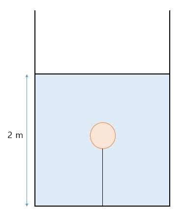
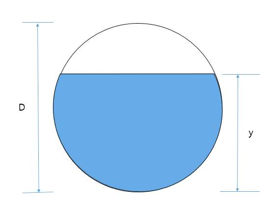

문제 3
질량이 27 kg, 반지름이 20 cm인 밀도가 균일한 구가 그림처럼 질량을 무시할 수 있는 줄에 매달려 물속에 완전히 잠겨 있다고 가정하자. 다음 물음에 답하여라. 단, 물의 밀도는 \(\rho_w = 1\,g/cm^3\), 중력가속도 \(g = 10\,m/s^2\), \(\pi = 3\)으로 계산한다.

(가) 구가 받는 부력의 크기는 얼마인가? [5점]
(나) 줄이 구를 잡아당기는 힘의 크기는 얼마인가? [10점]
(다) 묶여있던 줄을 끊으면 구는 어떻게 되는가? 만약, 구가 바닥에 가라앉다면 바닥에서 구에 작용하는 수직항력의 크기는 얼마인가? 만약, 수면 위로 뜬다면 구의 전체부피의 몇 %가 물 밖으로 나오게 되는가? [15점]
(라) 위의 (다) 실험 결과 구의 맨 아래 점에 가해지는 물의 압력과 대기압의 차이는 얼마인가? 단, 필요한 경우 아래의 표를 이용하시오. 표에서는 아래 그림과 같이 구의 일부분이 잠겨있을 때, 잠긴 부분의 부피와 구 전체 부피와의 비를 y 값에 따라 계산하였다. [20점]

| y | 부피 비 |
|---|---|
| \(0\) | \(0\) |
| \(\frac{D}{8}\) | \(\frac{11}{256}\) |
| \(\frac{D}{4}\) | \(\frac{5}{32}\) |
| \(\frac{D}{2}\) | \(\frac{1}{2}\) |